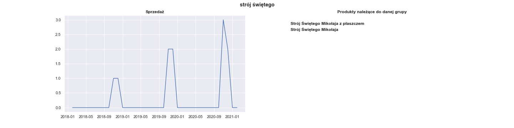
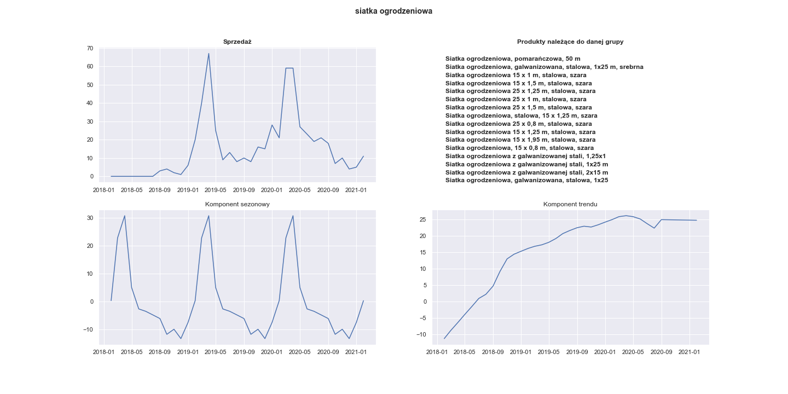

Chapter 4 The most seasonal products
4.0.1 Data representation
Before doing any further analysis, we grouped similar products as one cluster. It is described in greater details in the section Data preprocessing but here we give just some examples:
group zestaw wypoczynkowy contains
* Zestaw wypoczynkowy, 14 elementów, naturalny rattan
* Zestaw wypoczynkowy, 27 elementów, naturalny rattan
* 6-cz. zestaw wypoczynkowy do ogrodu, poduszki, rat
* and many many more
group stolik krzesła contains: * Stolik i krzesła barowe, 3 elementy, drewno’, * Stolik i krzesła barowe, 5 elementów, lite drewno akacjowe’, * Stolik i 2 krzesła z mozaiką niebiesko-białą’, * and many many more
4.0.2 Seasonality measure
Now we would like to measure which of these groups exhibit the strongest seasonality in terms of number of sales. We use the seasonality measure which is described here [https://otexts.com/fpp2/seasonal-strength.html]. In this method the time series is decomposed into trend, seasonal component and remainder:
\[ y_t = T_t + S_t + R_t \]
The strength of the seasonality is described as:
\[ F_S = max(0, 1 - \frac{Var(R_t)}{Var(S_T + R_t)} \]
A rationale behinds this is that for strongly seasonal data the detrended time series should have much more variation than the remainder component has alone.
4.0.3 What kind of seasonality?
Now it is time to answer the question of what period of times do we want to analyse. At first we thought about tracking the sales changes through the week, especially changes between working days and weekends. But let’s plot the bar plot of mean number of sales for every weekday:

We were quite surprised by the fact that sales drop every day from Monday to Saturday. We were told by Shumee’s representative that this is because some transaction have the delay between the payment and the confirmation from the bank. That is why some transactions actually made by customers on a weekend are not visible in Shumee’s data until Monday.
So we decided to not analyse the weekly seasonality, becuase the model based on this delayed data could drift far away from real customers behaviour. We think that the best solution is to consider monthly seasonality. Taking longer periods of time evens out the noise of delayed payments. On the other hand monthly seasonality is not so coarse as quaterly seasonality and could potentially capture more subtle patterns.
4.0.4 The most seasonal products
The groups of products that gained the greatest \(F_S\) measure are shown in the table:
| Name of products group | seasonality |
|---|---|
| strój świętego | 0.881225 |
| szlafrok unisex | 0.757613 |
| naciągany pokrowiec | 0.740653 |
| siatka ogrodzeniowa | 0.721494 |
| ostrzałka pił | 0.718631 |
| zestaw wypoczynkowy | 0.718409 |
| stolik krzesła | 0.709425 |
| ogrodowy stół | 0.708391 |
| donica gabionowa | 0.701651 |
| ławka wokół | 0.700390 |
Let’s see the sales of strój świętego:

Whereas it has perfect seasonal pattern it was sold only 11 times during the whole period of Shumee’s existence. It is too little to train any model, so we should disregard groups that aren’t sold up frequently enough.
Actually, we left only 100 best-selling groups, starting from lampa (4022 sales), elastyczne pokrowce (2680 sales), dywan (2674 sales) and ending with ścianki boczne (204 sales). Among those 100 best-selling products the most seasonal are:
| Name of products group | seasonality |
|---|---|
| siatka ogrodzeniowa | 0.721494 |
| zestaw wypoczynkowy | 0.718409 |
| donica gabionowa | 0.701651 |
| zestaw mebli | 0.679052 |
| parasol ogrodowy | 0.669685 |
| kosz gabionowy | 0.658801 |
| markiza | 0.612309 |
| klatka dla | 0.604560 |
| zaczepy do przyczepki | 0.592115 |
| ławka ogrodowa | 0.586771 |
Their respective plots are:

Visualization of the seasonal component of 20 most seasonal products:

It can be seen that almost all of this products were sold the most often between March and August.
Now we choose some of this most seasonal products to train some models for future predictions.